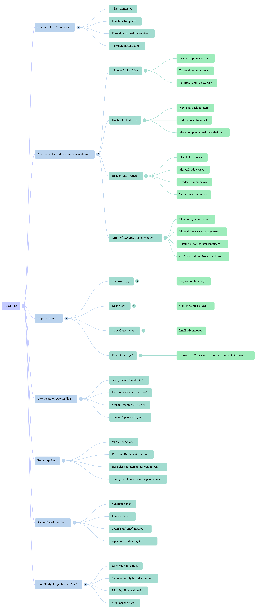

Xinxing Wu
<p class='titlep'> </p> # Lists Plus <hr> <br> Xinxing Wu
# Outline [<p class="hover-underline-animation">Templates (Generics)</p>](#/ch1) [<p class="hover-underline-animation">Circular Linked Lists</p>](#/ch2) [<p class="hover-underline-animation">Sorted Insert + Delete + Doubly Lists</p>](#/ch3) [<p class="hover-underline-animation">Summary</p>](#/ch4) [<p class="hover-underline-animation">Application</p>](#/ch5)
## Goal <div id="shadebox-neon" class="shadebox neon"> By the end, you will be able to: - Explain what a **template** is and why it’s useful - 👍 Build a **circular linked list** using pointers - 👍 Perform **search / insert / delete** in a circular list (safely) - 👍 Understand what a **doubly linked list** is and when to use it - Avoid common pointer mistakes (infinite loops, memory leaks) </div>
## Goal <div id="shadebox-neon" class="shadebox neon"> You should be comfortable with: - Variables, `if`, `while`, functions - `struct` / `class` basics - Pointers: `Node* p`, `p->next`, `nullptr` - `new` and `delete` </div>
<p class="definition-rainbow-title">Templates (Generics)</p>
<div class="definition-pro-Y-container"> <div class="definition-pro-Y-title">Templates (Generics)</div> <div class="definition-pro-Y-shadebox"> <div style="width: 800px;"></div> C++ Templates (Generics) + warm-up pointers review </div> </div> <div class="definition-pro-Y-container"> <div class="definition-pro-Y-title">Why do we need “generic” code?</div> <div class="definition-pro-Y-shadebox"> <div style="width: 800px;"></div> Sometimes we want the <spanBYMix>SAME</spanBYMix> data structure for <spanGREEN>many</spanGREEN> types: - Stack of `int` - Stack of `double` - Stack of `string` <hr style="border:0;height:6px;border-radius:999px;background:linear-gradient(90deg,#ff3b3b,#ffb13b,#fff23b,#3bff8f,#3bc8ff,#8a3bff,#ff3b3b);background-size:300% 100%;animation:rainbowLine 4s linear infinite;"><style>@keyframes rainbowLine{0%{background-position:0% 50%}100%{background-position:300% 50%}}</style> Without templates, we would <spanRED>rewrite</spanRED> the <spanRED>same</spanRED> class again and again. </div> </div> <div class="definition-pro-Y-container"> <div class="definition-pro-Y-title">Examples </div> <div class="definition-pro-Y-shadebox"> <div style="width: 800px;"></div> ``` #include <iostream> #include <string> using namespace std; class IntBox { private: int value; public: IntBox(int v) { value = v; } int get() const { return value; } void set(int v) { value = v; } }; class StringBox { private: string value; public: StringBox(string v) { value = v; } string get() const { return value; } void set(string v) { value = v; } }; class DoubleBox { private: double value; public: DoubleBox(double v) { value = v; } double get() const { return value; } void set(double v) { value = v; } }; int main() { IntBox a(10); StringBox b("Hello"); DoubleBox c(3.14); cout << a.get() << "\n"; cout << b.get() << "\n"; cout << c.get() << "\n"; } ``` </div> </div> <div class="definition-pro-Y-container"> <div class="definition-pro-Y-title">Examples </div> <div class="definition-pro-Y-shadebox"> <div style="width: 800px;"></div> ``` Box<int> a(10); Box<string> b("Hello"); Box<double> c(3.14); ``` </div> </div> <div class="definition-pro-Y-container"> <div class="definition-pro-Y-title">Examples </div> <div class="definition-pro-Y-shadebox"> <div style="width: 800px;"></div> Instead of writing: ``` IntBox StringBox DoubleBox CharBox FloatBox ``` You write only one generic class: Box\<T\>. </div> </div> <div class="definition-pro-Y-container"> <div class="definition-pro-Y-title">Template </div> <div class="definition-pro-Y-shadebox"> <div style="width: 800px;"></div> - Template = “code that works for many types” <hr style="border:0;height:6px;border-radius:999px;background:linear-gradient(90deg,#ff3b3b,#ffb13b,#fff23b,#3bff8f,#3bc8ff,#8a3bff,#ff3b3b);background-size:300% 100%;animation:rainbowLine 4s linear infinite;"><style>@keyframes rainbowLine{0%{background-position:0% 50%}100%{background-position:300% 50%}}</style> A **template** lets you write: - one class definition - that can become many real classes later Think: a “cookie cutter” for classes. </div> </div> <div class="definition-pro-Y-container"> <div class="definition-pro-Y-title">Template </div> <div class="definition-pro-Y-shadebox"> <div style="width: 800px;"></div> Smallest template example: a “Box” ``` #include <iostream> using namespace std; template <class T> class Box { private: T value; public: Box(T v) { value = v; } T get() const { return value; } void set(T v) { value = v; } }; int main() { Box<int> a(10); Box<string> b("Hello"); cout << a.get() << "\n"; cout << b.get() << "\n"; } ``` </div> </div> <div class="definition-pro-Y-container"> <div class="definition-pro-Y-title">What does Box<int> mean?</div> <div class="definition-pro-Y-shadebox"> <div style="width: 800px;"></div> Box<int> tells the compiler: - “Replace T with int” - and generate a real class type from the template. So you get a real class named something like Box_int. </div> </div> <div class="definition-pro-Y-container"> <div class="definition-pro-Y-title">Instantiation</div> <div class="definition-pro-Y-shadebox"> <div style="width: 800px;"></div> Compile-time generation - When you write: ``` Box<int> a(10); Box<string> b("Hi"); ``` </div> </div> - The compiler generates: - Box\<int\> version - Box\<string\> version - This happens at compile time, not at runtime. <div class="definition-pro-Y-container"> <div class="definition-pro-Y-title">Template syntax</div> <div class="definition-pro-Y-shadebox"> <div style="width: 800px;"></div> ``` template <class T> ``` - template introduces a template - T is a placeholder type name (can be anything: T, ItemType, etc.) </div> </div> <div class="definition-pro-Y-container"> <div class="definition-pro-Y-title">Template function</div> <div class="definition-pro-Y-shadebox"> <div style="width: 800px;"></div> ``` template <class T> T myMax(T a, T b) { if (a > b) return a; return b; } int main() { cout << myMax<int>(3, 7) << "\n"; cout << myMax<double>(2.5, 1.2) << "\n"; } ``` </div> </div> <div class="definition-pro-Y-container"> <div class="definition-pro-Y-title">Common confusion</div> <div class="definition-pro-Y-shadebox"> <div style="width: 800px;"></div> - “Why does my template code fail to link?” - Templates usually must be fully visible to the compiler when used. - That’s why many template classes put: - class definition + function definitions inside the same header file (.h / .hpp). </div> </div> <div class="definition-pro-Y-container"> <div class="definition-pro-Y-title">headers</div> <div class="definition-pro-Y-shadebox"> <div style="width: 800px;"></div> Template class definitions go in headers. If you do: - StackType.h (class template) - StackType.cpp (member defs) You often get linker errors. <hr style="border: none; border-top: 1.5px solid cyan;"> Beginner rule: - ✅ Put template implementations in the header. </div> </div> <div class="definition-pro-Y-container"> <div class="definition-pro-Y-title">Warm-up:pointers</div> <div class="definition-pro-Y-shadebox"> <div style="width: 800px;"></div> ``` int x = 5; int* p = &x; // p stores address of x cout << x << "\n"; // 5 cout << *p << "\n"; // 5 (dereference) ``` </div> </div> <div class="definition-pro-Y-container"> <div class="definition-pro-Y-title">A linked list node</div> <div class="definition-pro-Y-shadebox"> <div style="width: 800px;"></div> ``` struct Node { int data; Node* next; }; ``` - data is the value - next points to the next node </div> </div> <div class="definition-com-container"> <div class="definition-com-title">Questions</div> <div class="definition-com-shadebox"> <div style="width: 800px;"></div> If Node* a points to a node, how do you access the data? <button type="button" class="reveal-btn" data-answer="answer-q1">Show Answer</button> <div id="answer-q1" class="answer-box"> <b>Answer:</b>a->data </div> <hr style="border: none; border-top: 2px dashed orange;"> How do you move to the next node? <button type="button" class="reveal-btn" data-answer="answer-q2">Show Answer</button> <div id="answer-q2" class="answer-box"> <b>Answer:</b>a = a->next </div> </div> </div>
<p class="definition-rainbow-title">Circular Linked Lists</p>
<div class="definition-pro-Y-container"> <div class="definition-pro-Y-title">Circular Linked Lists</div> <div class="definition-pro-Y-shadebox"> <div style="width: 800px;"></div> Circular linked lists (idea + traversal + search) </div> </div> <div class="definition-pro-Y-container"> <div class="definition-pro-Y-title">Reminder: linear singly linked list</div> <div class="definition-pro-Y-shadebox"> <div style="width: 800px;"></div> In a normal (linear) list: - last node points to nullptr Example: A → B → C → nullptr </div> </div> - nullptr in C++ is a special keyword that means “<spanBYMix>null pointer</spanBYMix>” — a pointer that points to nothing. <div class="definition-pro-Y-container"> <div class="definition-pro-Y-title">null pointer</div> <div class="definition-pro-Y-shadebox"> <div style="width: 800px;"></div> Sir Tony Hoare (11 January 1934 – 5 March 2026) introduced the null reference (null pointer) in 1965 while designing the ALGOL W programming language, aiming to create a simple way to represent the absence of an object. He later famously referred to this invention as his "billion-dollar mistake" due to the countless bugs and crashes it caused. </div> </div> <div class="definition-pro-Y-container"> <div class="definition-pro-Y-title">Circular linked list</div> <div class="definition-pro-Y-shadebox"> <div style="width: 800px;"></div> In a circular list: - The last node points back to the first node Example: <div style="font-size: 1.6em; line-height: 1.5;"> ``` A → B → C ↑ └───────┘ ``` </div> So there is <spanRED>no nullptr</spanRED> at the end. </div> </div> <div class="definition-pro-Y-container"> <div class="definition-pro-Y-title">Why use a circular list?</div> <div class="definition-pro-Y-shadebox"> <div style="width: 800px;"></div> Circular lists are useful when: - you want to keep cycling (round-robin scheduling) - you often need fast access to <spanBYMix>both</spanBYMix> “front” and “end” <hr style="border:0;height:6px;border-radius:999px;background:linear-gradient(90deg,#ff3b3b,#ffb13b,#fff23b,#3bff8f,#3bc8ff,#8a3bff,#ff3b3b);background-size:300% 100%;animation:rainbowLine 4s linear infinite;"><style>@keyframes rainbowLine{0%{background-position:0% 50%}100%{background-position:300% 50%}}</style> A common trick: - keep one pointer to the rear (last) node. </div> </div> <div class="definition-pro-Y-container"> <div class="definition-pro-Y-title">Example - round-robin scheduling</div> <div class="definition-pro-Y-shadebox"> <div style="width: 800px;"></div> - Suppose the CPU is using <spanGREEN>Round-Robin scheduling</spanGREEN> with a time quantum = 2 ms. <div style="font-size: 1.6em; line-height: 1.5;"> ``` | Process | Burst Time | | ------- | ---------- | | P1 | 5 ms | | P2 | 3 ms | | P3 | 7 ms | ``` </div> </div> </div> <div class="definition-pro-Y-container"> <div class="definition-pro-Y-title">Example - round-robin scheduling</div> <div class="definition-pro-Y-shadebox"> <div style="width: 800px;"></div> Each process gets at most 2 ms each turn. - P1 runs for 2 ms → remaining 3 ms - P2 runs for 2 ms → remaining 1 ms - P3 runs for 2 ms → remaining 5 ms - P1 runs for 2 ms → remaining 1 ms </div> </div> <div class="definition-pro-Y-container"> <div class="definition-pro-Y-title">Example - round-robin scheduling</div> <div class="definition-pro-Y-shadebox"> <div style="width: 800px;"></div> - P2 runs for 1 ms → finished - P3 runs for 2 ms → remaining 3 ms - P1 runs for 1 ms → finished - P3 runs for 2 ms → remaining 1 ms - P3 runs for 1 ms → finished </div> </div> <div class="definition-pro-Y-container"> <div class="definition-pro-Y-title">Example - round-robin scheduling</div> <div class="definition-pro-Y-shadebox"> <div style="width: 800px;"></div> <div style="font-size: 1.6em; line-height: 1.5;"> ``` 0 2 4 6 8 9 11 12 14 15 | P1 | P2 | P3 | P1 | P2 | P3 | P1 | P3 | P3 | ``` </div> Completion Times - P1 = 12 ms - P2 = 9 ms - P3 = 15 ms </div> </div> <div class="definition-pro-Y-container"> <div class="definition-pro-Y-title">Example - round-robin scheduling</div> <div class="definition-pro-Y-shadebox"> <div style="width: 800px;"></div> <div style="font-size: 1.6em; line-height: 1.5;"> ``` 0 2 4 6 8 9 11 12 14 15 | P1 | P2 | P3 | P1 | P2 | P3 | P1 | P3 | P3 | ``` </div> Waiting time = Turnaround time - Burst time - P1 = 12 - 5 = 7 ms - P2 = 9 - 3 = 6 ms - P3 = 15 - 7 = 8 ms </div> </div> <div class="definition-pro-Y-container"> <div class="definition-pro-Y-title">Example - round-robin scheduling</div> <div class="definition-pro-Y-shadebox"> <div style="width: 800px;"></div> Each process gets a small amount of CPU time. If it is not finished, it goes to the back of the queue and waits for its next turn. This makes the system more fair, especially in time-sharing systems. </div> </div> <div class="definition-pro-Y-container"> <div class="definition-pro-Y-title">One-pointer trick: rear</div> <div class="definition-pro-Y-shadebox"> <div style="width: 800px;"></div> We store: - Node* rear; // <spanRED>points to last node</spanRED> <hr style="border:0;height:6px;border-radius:999px;background:linear-gradient(90deg,#ff3b3b,#ffb13b,#fff23b,#3bff8f,#3bc8ff,#8a3bff,#ff3b3b);background-size:300% 100%;animation:rainbowLine 4s linear infinite;"><style>@keyframes rainbowLine{0%{background-position:0% 50%}100%{background-position:300% 50%}}</style> Then: - first node is rear->next So we can reach front quickly: - front = rear->next - rear = rear </div> </div> <div class="definition-pro-Y-container"> <div class="definition-pro-Y-title">Empty circular list</div> <div class="definition-pro-Y-shadebox"> <div style="width: 800px;"></div> If list is empty: - rear == nullptr </div> </div> <div class="definition-pro-Y-container"> <div class="definition-pro-Y-title">One-node circular list</div> <div class="definition-pro-Y-shadebox"> <div style="width: 800px;"></div> If there is one node X: - rear points to X - rear->next points to itself (X) So: X → (back to X) </div> </div> <div class="definition-pro-Y-container"> <div class="definition-pro-Y-title">Example</div> <div class="definition-pro-Y-shadebox"> <div style="width: 800px;"></div> ``` #include <iostream> using namespace std; struct Node { int data; Node* next; }; int main() { Node* rear = new Node; rear->data = 10; // only one node, so it points to itself rear->next = rear; cout << "rear data: " << rear->data << "\n"; cout << "rear->next data: " << rear->next->data << "\n"; if (rear->next == rear) { cout << "rear->next points to itself\n"; } return 0; } ``` </div> </div> <div class="definition-pro-Y-container"> <div class="definition-pro-Y-title">A safe print traversal pattern</div> <div class="definition-pro-Y-shadebox"> <div style="width: 800px;"></div> Because there is no nullptr, you <spanRED>must stop</spanRED> when you come back. <hr style="border:0;height:6px;border-radius:999px;background:linear-gradient(90deg,#ff3b3b,#ffb13b,#fff23b,#3bff8f,#3bc8ff,#8a3bff,#ff3b3b);background-size:300% 100%;animation:rainbowLine 4s linear infinite;"><style>@keyframes rainbowLine{0%{background-position:0% 50%}100%{background-position:300% 50%}}</style> Use a do...while: - start at rear->next (first) - stop when <spanRED>current becomes first again</spanRED> </div> </div> <div id="shadebox"> ### Example: Circular list of int <hr style="border: none; border-top: 1.5px solid cyan;"> ``` #include <iostream> using namespace std; struct Node { int data; Node* next; }; class CircularList { private: Node* rear; // last node; rear->next is the first public: CircularList() { rear = nullptr; } bool isEmpty() const { return rear == nullptr; } void print() const { if (rear == nullptr) { cout << "[empty]\n"; return; } Node* first = rear->next; Node* cur = first; do { cout << cur->data << " "; cur = cur->next; } while (cur != first); cout << "\n"; } }; ``` </div> <div class="definition-shakeflash-container"> <div class="definition-shakeflash-title">infinite loop</div> <div class="definition-shakeflash-shadebox"> <div style="width: 800px;"></div> If you write: <div style="font-size: 1.6em; line-height: 1.5;"> ``` while (cur != nullptr) { ... } ``` </div> <hr style="border: none; border-top: 2px dashed orange;"> in a circular list, it never ends (no nullptr). - You must compare against the starting node. </div> </div> <div class="definition-pro-Y-container"> <div class="definition-pro-Y-title">insert at end</div> <div class="definition-pro-Y-shadebox"> <div style="width: 800px;"></div> This is <spanRED>NOT</spanRED> sorted insert yet — just append. <div style="font-size: 1.6em; line-height: 1.5;"> ``` void pushBack(int x) { Node* n = new Node; n->data = x; if (rear == nullptr) { // first node: points to itself n->next = n; rear = n; return; } n->next = rear->next; // new points to first rear->next = n; // old rear points to new rear = n; // rear becomes new } ``` </div> </div> </div> <div class="definition-pro-Y-container"> <div class="definition-pro-Y-title">Quick test program</div> <div class="definition-pro-Y-shadebox"> <div style="width: 800px;"></div> <div style="font-size: 1.6em; line-height: 1.5;"> ``` int main() { CircularList L; L.print(); // [empty] L.pushBack(10); L.pushBack(20); L.pushBack(30); L.print(); // 10 20 30 } ``` </div> </div> </div> <div class="definition-pro-Y-container"> <div class="definition-pro-Y-title">Searching in a circular list</div> <div class="definition-pro-Y-shadebox"> <div style="width: 800px;"></div> We often want: - cur = node we are <spanGREEN>checking</spanGREEN> - pred = the node before cur <hr style="border: none; border-top: 1.5px solid cyan;"> Why keep pred? Because insertion/deletion needs the previous node to “<spanBYMix>relink</spanBYMix>”. </div> </div> <div class="definition-pro-Y-container"> <div class="definition-pro-Y-title">Search idea</div> <div class="definition-pro-Y-shadebox"> <div style="width: 800px;"></div> Start: - pred = rear - cur = rear->next (first) Move together: - pred = cur - cur = cur->next </div> </div> <div class="definition-pro-Y-container"> <div class="definition-pro-Y-title">Search idea (cont.)</div> <div class="definition-pro-Y-shadebox"> <div style="width: 800px;"></div> Stop when: - <spanRED>found target</spanRED> OR - we returned to the <spanRED>first node</spanRED> again </div> </div> <div class="definition-pro-Y-container"> <div class="definition-pro-Y-title">Find first node with value x</div> <div class="definition-pro-Y-shadebox"> <div style="width: 800px;"></div> <div style="font-size: 1.6em; line-height: 1.5;"> ``` bool contains(int x) const { if (rear == nullptr) return false; Node* first = rear->next; Node* cur = first; do { if (cur->data == x) return true; cur = cur->next; } while (cur != first); return false; } ``` </div> </div> </div> <div class="definition-com-container"> <div class="definition-com-title">Exercise</div> <div class="definition-com-shadebox"> <div style="width: 800px;"></div> Given the list: 10 → 20 → 30 (circular) Where is the “front”? <button type="button" class="reveal-btn" data-answer="answer-q3">Show Answer</button> <div id="answer-q3" class="answer-box"> <b>Answer:</b>rear->next (10) </div> <hr style="border: none; border-top: 2px dashed orange;"> Where is the “rear”? <button type="button" class="reveal-btn" data-answer="answer-q4">Show Answer</button> <div id="answer-q4" class="answer-box"> <b>Answer:</b>rear (30) </div> </div> </div>
<p class="definition-rainbow-title">Sorted Insert + Delete + Doubly Lists</p>
<div class="definition-pro-Y-container"> <div class="definition-pro-Y-title">Sorted Insert + Delete + Doubly Lists</div> <div class="definition-pro-Y-shadebox"> <div style="width: 800px;"></div> Insert/Delete in circular list + Doubly linked lists + practice </div> </div> <div class="definition-pro-Y-container"> <div class="definition-pro-Y-title">Sorted insert (goal)</div> <div class="definition-pro-Y-shadebox"> <div style="width: 800px;"></div> - We want to keep values in <spanGREEN>increasing</spanGREEN> order: - Example after inserting: - insert 25 into 10 20 30 → 10 20 25 30 - We need pred and cur again. </div> </div> <div class="definition-pro-Y-container"> <div class="definition-pro-Y-title">Sorted insert logic</div> <div class="definition-pro-Y-shadebox"> <div style="width: 800px;"></div> - If empty → make one-node <spanGREEN>circle</spanGREEN> - Otherwise, find the first place where: - cur->data >= x - Insert between <spanGREEN>pred</spanGREEN> and <spanBYMix>cur</spanBYMix> - If inserted after rear (new largest), <spanRED>update rear</spanRED> </div> </div> <div id="shadebox"> ### Sorted insert code <hr style="border: none; border-top: 1.5px solid cyan;"> ``` void insertSorted(int x) { Node* n = new Node; n->data = x; // Case 1: empty list if (rear == nullptr) { n->next = n; rear = n; return; } Node* first = rear->next; Node* pred = rear; Node* cur = first; // Find position: first node >= x do { if (cur->data >= x) break; pred = cur; cur = cur->next; } while (cur != first); // Insert between pred and cur pred->next = n; n->next = cur; // If we inserted after the old rear, update rear // This happens when x is bigger than everything. if (pred == rear && x >= rear->data) { rear = n; } } ``` </div> <div class="definition-pro-Y-container"> <div class="definition-pro-Y-title">insert smallest</div> <div class="definition-pro-Y-shadebox"> <div style="width: 800px;"></div> Why “insert smallest” is easy with rear-pointer If <spanGREEN>x is smaller than the first element</spanGREEN>: <div id="shadebox"> - pred is still rear - cur is still first </div> Then: <div id="shadebox"> - rear->next becomes <spanGREEN>the new node automatically</spanGREEN> </div> So we <spanRED>don’t</spanRED> need a special “insert at front” case. </div> </div> <div class="definition-pro-Y-container"> <div class="definition-pro-Y-title">Delete in circular list</div> <div class="definition-pro-Y-shadebox"> <div style="width: 800px;"></div> Deletion must handle <spanRED>special</spanRED> cases: - empty list - deleting the only node (Back to the initial status) - deleting the rear node - deleting a middle/front node </div> </div> <div class="definition-pro-Y-container"> <div class="definition-pro-Y-title">Delete value x</div> <div class="definition-pro-Y-shadebox"> <div style="width: 800px;"></div> <div style="font-size: 1.6em; line-height: 1.5;"> ``` bool remove(int x) { if (rear == nullptr) return false; Node* first = rear->next; Node* pred = rear; Node* cur = first; do { if (cur->data == x) { // Case: only one node if (cur == pred) { delete cur; rear = nullptr; return true; } // General unlink pred->next = cur->next; // If deleting rear, move rear back if (cur == rear) { rear = pred; } delete cur; return true; } pred = cur; cur = cur->next; } while (cur != first); return false; } ``` </div> </div> </div> <div class="definition-pro-Y-container"> <div class="definition-pro-Y-title">Delete</div> <div class="definition-pro-Y-shadebox"> <div style="width: 800px;"></div> Delete: what mistakes happen most? - Forgetting delete cur; → <spanRED>memory leak</spanRED> - Forgetting to update rear when deleting rear - Incorrect stopping condition → infinite loop - Using cur != nullptr in circular list → infinite loop </div> </div> <div class="definition-pro-Y-container"> <div class="definition-pro-Y-title">Memory Management</div> <div class="definition-pro-Y-shadebox"> - Memory management is the process of controlling <spanGREEN>how much memory your program uses - and how it is used</spanGREEN>. - This includes <spanBYMix>creating</spanBYMix>, <spanBYMix>using</spanBYMix>, and <spanBYMix>releasing memory</spanBYMix> when it's <spanRED>no</spanRED> longer needed. </div> </div> <div class="definition-com-container"> <div class="definition-com-title">Notes</div> <div class="definition-com-shadebox"> - In C++, you can use pointers to <spanBYMix>access</spanBYMix> and <spanBYMix>change memory</spanBYMix> directly. > This is powerful, but also risky. - If you use a pointer the wrong way, you could accidentally change or damage other parts of your program's memory. </div> </div> <div class="definition-container"> <div class="definition-title">Differences - Memory location</div> <div class="definition-shadebox"> <div style="width: 800px;"></div> <div style="font-size: 1.6em; line-height: 1.5;"> ``` int ptr = 5; ``` </div> - usually creates a regular local variable. <hr style="border:0;height:6px;border-radius:999px;background:linear-gradient(90deg,#ff3b3b,#ffb13b,#fff23b,#3bff8f,#3bc8ff,#8a3bff,#ff3b3b);background-size:300% 100%;animation:rainbowLine 4s linear infinite;"><style>@keyframes rainbowLine{0%{background-position:0% 50%}100%{background-position:300% 50%}}</style> <div style="font-size: 1.6em; line-height: 1.5;"> ``` int* ptr = new int; ``` </div> - creates memory dynamically, and that memory must later be released: <div style="font-size: 1.6em; line-height: 1.5;"> ``` delete ptr; ``` </div> Otherwise, you get a memory leak. </div> </div> <div class="definition-container"> <div class="definition-title">Note</div> <div class="definition-shadebox"> > A memory leak happens when a program asks for memory, uses it, but never gives it back. In another word, A memory leak is memory that your program allocated but forgot to release. <div style="font-size: 1.6em; line-height: 1.5;"> ``` int* p = new int; *p = 35; ``` </div> Memory is created dynamically. If you do <spanRED>not</spanRED> write: <div style="font-size: 1.6em; line-height: 1.5;"> ``` delete p; ``` </div> </div> </div> > Memory stays allocated even after you are done with it. That is a memory leak <div class="definition-pro-Y-container"> <div class="definition-pro-Y-title">Circular list</div> <div class="definition-pro-Y-shadebox"> <div style="width: 800px;"></div> <div style="font-size: 1.2em; line-height: 0.5;"> ``` #include <iostream> using namespace std; struct Node { int data; Node* next; }; class CircularList { private: Node* rear; public: CircularList() { rear = nullptr; } void print() const { if (rear == nullptr) { cout << "[empty]\n"; return; } Node* first = rear->next; Node* cur = first; do { cout << cur->data << " "; cur = cur->next; } while (cur != first); cout << "\n"; } void insertSorted(int x) { Node* n = new Node; n->data = x; if (rear == nullptr) { n->next = n; rear = n; return; } Node* first = rear->next; Node* pred = rear; Node* cur = first; do { if (cur->data >= x) break; pred = cur; cur = cur->next; } while (cur != first); pred->next = n; n->next = cur; if (pred == rear && x >= rear->data) { rear = n; } } bool remove(int x) { if (rear == nullptr) return false; Node* first = rear->next; Node* pred = rear; Node* cur = first; do { if (cur->data == x) { if (cur == pred) { delete cur; rear = nullptr; return true; } pred->next = cur->next; if (cur == rear) { rear = pred; } delete cur; return true; } pred = cur; cur = cur->next; } while (cur != first); return false; } ~CircularList() { //~CircularList() is the destructor of the CircularList class in C++. //It means: // CircularList() → constructor, used when an object is created // ~CircularList() → destructor, used when an object is destroyed //The ~ in front of the class name means “this function cleans up //the object before it disappears.” // simple cleanup (optional for beginners) while (rear != nullptr) { int x = rear->next->data; remove(x); } } }; int main() { CircularList L; L.insertSorted(20); L.insertSorted(10); L.insertSorted(30); L.insertSorted(25); L.print(); // 10 20 25 30 L.remove(10); L.print(); // 20 25 30 L.remove(30); L.print(); // 20 25 L.remove(20); L.remove(25); L.print(); // [empty] } ``` </div> </div> </div> <div class="definition-pro-Y-container"> <div class="definition-pro-Y-title">Doubly linked list</div> <div class="definition-pro-Y-shadebox"> <div style="width: 800px;"></div> Each node has TWO links: - next (forward) - prev (backward) So you can <spanGREEN>traverse forward and backward</spanGREEN>. </div> </div> <div class="definition-pro-Y-container"> <div class="definition-pro-Y-title">Doubly linked list node</div> <div class="definition-pro-Y-shadebox"> <div style="font-size: 1.6em; line-height: 1.5;"> ``` struct DNode { int data; DNode* next; DNode* prev; }; ``` </div> </div> </div> <div class="definition-pro-Y-container"> <div class="definition-pro-Y-title">Doubly linked list node</div> <div class="definition-pro-Y-shadebox"> <div style="width: 800px;"></div> - Easy to go backwards (reverse traversal) - If you already have a pointer to a node, deletion can be easier (because you can reach the predecessor via prev) </div> </div> <div class="definition-pro-Y-container"> <div class="definition-pro-Y-title">Doubly linked list node</div> <div class="definition-pro-Y-shadebox"> <div style="width: 800px;"></div> Forward: A <-> B <-> C - B->next is C - B->prev is A </div> </div> <div class="question-container"> <div class="question-title">Insert after a given node</div> <div class="question-shadebox"> <div style="width: 800px;"></div> Assume p is a valid node pointer. <hr style="border: none; border-top: 2px dashed green;"> <div style="font-size: 1.6em; line-height: 1.5;"> ``` void insertAfter(DNode* p, int x) { DNode* n = new DNode; n->data = x; n->next = p->next; n->prev = p; if (p->next != nullptr) { p->next->prev = n; } p->next = n; } ``` </div> </div> </div> <div class="question-container"> <div class="question-title">Delete a node</div> <div class="question-shadebox"> <div style="width: 800px;"></div> Assume p is not null. <hr style="border: none; border-top: 2px dashed green;"> ``` void deleteNode(DNode* p) { if (p->prev != nullptr) { p->prev->next = p->next; } if (p->next != nullptr) { p->next->prev = p->prev; } delete p; } ``` </div> </div> <div class="question-container"> <div class="question-title">Notes</div> <div class="question-shadebox"> <div style="width: 800px;"></div> In real list classes, we often also track: - head pointer - tail pointer <hr style="border: none; border-top: 2px dashed green;"> And we must handle: - deleting the head - deleting the tail - empty list </div> </div> <div class="definition-com-container"> <div class="definition-com-title">Notes</div> <div class="definition-com-shadebox"> In a circular list with rear, what is the first node? <button type="button" class="reveal-btn" data-answer="answer-q5">Show Answer</button> <div id="answer-q5" class="answer-box"> <b>Answer:</b>rear->next </div> <hr style="border: none; border-top: 2px dashed orange;"> Why can’t we use while(cur != nullptr) to traverse a circular list? <button type="button" class="reveal-btn" data-answer="answer-q6">Show Answer</button> <div id="answer-q6" class="answer-box"> <b>Answer:</b>because we never reach nullptr </div> <hr style="border: none; border-top: 2px dashed orange;"> What extra pointer does a doubly list node store? <button type="button" class="reveal-btn" data-answer="answer-q7">Show Answer</button> <div id="answer-q7" class="answer-box"> <b>Answer:</b>prev (or back) </div> </div> </div> <div class="question-container"> <div class="question-title">Note</div> <div class="question-shadebox"> - Explain templates as compile-time “type filling” - Build and traverse a circular list safely - Insert/delete in a circular list with correct pointer updates - Describe how doubly lists differ from singly lists </div> </div>
<p class="definition-rainbow-title">Summary</p>
<iframe src="./Discussion6.html" style="width:100%;max-width:1200px;height:620px;border:0;border-radius:14px;overflow:hidden;display:block;margin:30px auto;" allow="autoplay" sandbox="allow-scripts allow-same-origin"> </iframe> <iframe style="width:100%;max-width:1200px;height:700px;border:0;border-radius:16px;overflow:hidden;display:block;margin:0 auto;box-shadow:0 18px 50px rgba(0,0,0,.35);background:rgba(0,0,0,.06);" src="./files/7_ListsPlus.pdf#page=1&zoom=page-width" allow="fullscreen" loading="lazy"> </iframe> <iframe style="width:100%;max-width:1200px;height:700px;border:0;border-radius:12px;overflow:hidden;display:block;margin:0 auto;" srcdoc='<!doctype html> <html> <head> <meta charset="utf-8" /> <meta name="viewport" content="width=device-width,initial-scale=1" /> <style> body{margin:0;padding:14px;font-family:Arial,Helvetica,sans-serif;background:#32a881;} .wrap{width:100%;max-width:1200px;margin:0 auto;} .bar{display:flex;gap:10px;align-items:center;margin-bottom:10px;} button{padding:8px 12px;border:1px solid #ccc;border-radius:8px;background:#fff;cursor:pointer;} .label{margin-left:auto;font-size:14px;color:#333;} .box{width:100%;height:650px;border:1px solid rgba(0,0,0,.18);border-radius:12px;overflow:auto;background:#fafafa;box-shadow:0 10px 25px rgba(0,0,0,.10);} img{display:block;width:auto;height:700px;max-width:none;max-height:none;transform-origin:top left;transform:scale(1);} </style> </head> <body> <div class="wrap" id="root"> <div class="bar"> <button id="zin" type="button">Zoom +</button> <button id="zout" type="button">Zoom -</button> <button id="zreset" type="button">Reset (100%)</button> <span class="label" id="zl">100%</span> </div> <div class="box" id="box"> <p></p> </div> </div> <script> (function(){ var zoom=1, step=0.2, min=0.2, max=6; var img=document.getElementById("img"); var label=document.getElementById("zl"); var box=document.getElementById("box"); function apply(){ img.style.transform="scale("+zoom+")"; label.textContent=Math.round(zoom*100)+"%"; } document.getElementById("zin").addEventListener("click", function(){ zoom=Math.min(max, zoom+step); apply(); }); document.getElementById("zout").addEventListener("click", function(){ zoom=Math.max(min, zoom-step); apply(); }); document.getElementById("zreset").addEventListener("click", function(){ zoom=1; apply(); }); box.addEventListener("wheel", function(e){ if(!e.ctrlKey) return; e.preventDefault(); zoom += (e.deltaY < 0) ? step : -step; zoom = Math.max(min, Math.min(max, zoom)); apply(); }, {passive:false}); apply(); })(); </script> </body> </html>'> </iframe> ## Review <video controls> <source src="./files/Advanced_Linked_Lists.mp4" type="video/mp4"> </video>
<p class="definition-rainbow-title">Application</p>
<div class="definition-com-container"> <div class="definition-com-title">Exercise</div> <div class="definition-com-shadebox"> A template allows one class/function to work with many data types. <button type="button" class="reveal-btn" data-answer="answer-q8">Show Answer</button> <div id="answer-q8" class="answer-box"> <b>Answer:</b>True </div> <hr style="border: none; border-top: 2px dashed orange;"> In a circular linked list, the last node’s next is nullptr. <button type="button" class="reveal-btn" data-answer="answer-q9">Show Answer</button> <div id="answer-q9" class="answer-box"> <b>Answer:</b>False </div> <hr style="border: none; border-top: 2px dashed orange;"> If rear points to the last node in a circular list, then the first node is rear->next. <button type="button" class="reveal-btn" data-answer="answer-q10">Show Answer</button> <div id="answer-q10" class="answer-box"> <b>Answer:</b>True </div> </div> </div> <div class="definition-com-container"> <div class="definition-com-title">Exercise (cont.)</div> <div class="definition-com-shadebox"> Using while(cur != nullptr) is a safe way to traverse a circular linked list. <button type="button" class="reveal-btn" data-answer="answer-q11">Show Answer</button> <div id="answer-q11" class="answer-box"> <b>Answer:</b>False </div> <hr style="border: none; border-top: 2px dashed orange;"> A one-node circular list has its next pointer pointing to itself. <button type="button" class="reveal-btn" data-answer="answer-q12">Show Answer</button> <div id="answer-q12" class="answer-box"> <b>Answer:</b>True </div> <hr style="border: none; border-top: 2px dashed orange;"> When deleting the rear node in a circular list, you may need to update the rear pointer. <button type="button" class="reveal-btn" data-answer="answer-q13">Show Answer</button> <div id="answer-q13" class="answer-box"> <b>Answer:</b>True </div> </div> </div> <div class="definition-com-container"> <div class="definition-com-title">Exercise (cont.)</div> <div class="definition-com-shadebox"> A doubly linked list node usually stores both next and prev pointers. <button type="button" class="reveal-btn" data-answer="answer-q14">Show Answer</button> <div id="answer-q14" class="answer-box"> <b>Answer:</b>True </div> <hr style="border: none; border-top: 2px dashed orange;"> In a doubly linked list, you can traverse backward starting from the head without any extra pointers. <button type="button" class="reveal-btn" data-answer="answer-q15">Show Answer</button> <div id="answer-q15" class="answer-box"> <b>Answer:</b>False (you normally start backward from the tail, or you must find tail first) </div> <hr style="border: none; border-top: 2px dashed orange;"> If you delete a node in a linked list but forget delete, you may cause a memory leak. <button type="button" class="reveal-btn" data-answer="answer-q16">Show Answer</button> <div id="answer-q16" class="answer-box"> <b>Answer:</b>True </div> </div> </div> <div class="definition-com-container"> <div class="definition-com-title">Exercise (cont.)</div> <div class="definition-com-shadebox"> Box<int> and Box<string> are created from the same template definition by replacing T. <button type="button" class="reveal-btn" data-answer="answer-q17">Show Answer</button> <div id="answer-q17" class="answer-box"> <b>Answer:</b>True </div> <hr style="border: none; border-top: 2px dashed orange;"> A stack of different data types can be supported using a C++ __________. <button type="button" class="reveal-btn" data-answer="answer-q19">Show Answer</button> <div id="answer-q19" class="answer-box"> <b>Answer:</b>template </div> </div> </div> <div class="definition-com-container"> <div class="definition-com-title">Exercise (cont.)</div> <div class="definition-com-shadebox"> In a circular linked list, the last node points back to the __________ node. <button type="button" class="reveal-btn" data-answer="answer-q20">Show Answer</button> <div id="answer-q20" class="answer-box"> <b>Answer:</b>first </div> <hr style="border: none; border-top: 2px dashed orange;"> If rear points to the last node in a circular list, the first node is __________. <button type="button" class="reveal-btn" data-answer="answer-q21">Show Answer</button> <div id="answer-q21" class="answer-box"> <b>Answer:</b>rear->next </div> <hr style="border: none; border-top: 2px dashed orange;"> A circular linked list traversal often uses a __________ loop to ensure the first node is processed before stopping. <button type="button" class="reveal-btn" data-answer="answer-q22">Show Answer</button> <div id="answer-q22" class="answer-box"> <b>Answer:</b>do...while </div> </div> </div> <div class="definition-com-container"> <div class="definition-com-title">Exercise (cont.)</div> <div class="definition-com-shadebox"> In a circular list, you stop traversal when cur becomes equal to __________ again. <button type="button" class="reveal-btn" data-answer="answer-q23">Show Answer</button> <div id="answer-q23" class="answer-box"> <b>Answer:</b>first (or the starting node) </div> <hr style="border: none; border-top: 2px dashed orange;"> When inserting at the end in a circular list, the new node’s next should point to __________. <button type="button" class="reveal-btn" data-answer="answer-q24">Show Answer</button> <div id="answer-q24" class="answer-box"> <b>Answer:</b>rear->next (the first node) </div> <hr style="border: none; border-top: 2px dashed orange;"> A doubly linked list node has two links: __________ and __________. <button type="button" class="reveal-btn" data-answer="answer-q25">Show Answer</button> <div id="answer-q25" class="answer-box"> <b>Answer:</b>next, prev </div> </div> </div> <div class="definition-com-container"> <div class="definition-com-title">Exercise (cont.)</div> <div class="definition-com-shadebox"> In a doubly linked list, if you are at a node p, the previous node can be reached with __________. <button type="button" class="reveal-btn" data-answer="answer-q26">Show Answer</button> <div id="answer-q26" class="answer-box"> <b>Answer:</b>p->prev </div> <hr style="border: none; border-top: 2px dashed orange;"> The C++ operator used to access a member through a pointer (like p->data) is __________. <button type="button" class="reveal-btn" data-answer="answer-q27">Show Answer</button> <div id="answer-q27" class="answer-box"> <b>Answer:</b>-> </div> <hr style="border: none; border-top: 2px dashed orange;"> The keyword used to free memory created with new is __________. <button type="button" class="reveal-btn" data-answer="answer-q28">Show Answer</button> <div id="answer-q28" class="answer-box"> <b>Answer:</b>delete </div> </div> </div> <div class="definition-pro-Y-container"> <div class="definition-pro-Y-title">Lab</div> <div class="definition-pro-Y-shadebox"> Application Lab: “Round-Robin Help Desk + Recent History” <div id="shadebox-glass" class="shadebox glass"> You are building a tiny Help Desk simulator: - A circular linked list holds the agents in a loop (round-robin). - A doubly linked list stores a history of the last actions (so you can go forward/backward). - A template Box<T> is used to show you can reuse code for different types. This lab is small, practical, and matches what beginners can do in one class. </div> </div> </div> <div class="definition-pro-Y-container"> <div class="definition-pro-Y-title">Lab: Part A</div> <div class="definition-pro-Y-shadebox"> Requirements: Circular List (Agents) Create a circular list of agents (by name): - Start empty - Insert agents in sorted order by name: - "Amy", "Ben", "Cody", "Dina" - Print the circular list once (do not infinite loop) </div> </div> <div class="definition-pro-Y-container"> <div class="definition-pro-Y-title">Lab: Part A (cont.)</div> <div class="definition-pro-Y-shadebox"> Operations to implement (in a class AgentCircle) - insertSorted(string name) - string nextAgent() - returns the next agent name in round-robin order - each call moves forward one agent - bool remove(string name) - remove agent by name - void printOnce() </div> </div> <div class="definition-pro-Y-container"> <div class="definition-pro-Y-title">Lab: Part A (cont.)</div> <div class="definition-pro-Y-shadebox"> Doubly List: Each time you assign a ticket to an agent, you add one history message like: - "Ticket 1 -> Amy" - "Ticket 2 -> Ben" - "Ticket 3 -> Cody" Store history in a doubly linked list so you can: - print forward (oldest → newest) - print backward (newest → oldest) </div> </div> <div class="definition-pro-Y-container"> <div class="definition-pro-Y-title">Lab: Part A (cont.)</div> <div class="definition-pro-Y-shadebox"> Operations to implement (in a class HistoryList) - void pushBack(string msg) (append) - void printForward() - void printBackward() </div> </div> <div class="definition-pro-Y-container"> <div class="definition-pro-Y-title">Lab: Part A (cont.)</div> <div class="definition-pro-Y-shadebox"> Create a simple template: - Box<T> that stores one value - Use it for: - Box<int> totalTickets - Box<string> systemName </div> </div> <div class="definition-pro-Y-container"> <div class="definition-pro-Y-title">Lab: Part B</div> <div class="definition-pro-Y-shadebox"> Test Scenario (what your program must do) - Create agent circle with: Amy, Ben, Cody, Dina (sorted insert) - Assign 6 tickets using round-robin: - Ticket 1 -> (next agent) - ... - Ticket 6 -> (next agent) </div> </div> <div class="definition-pro-Y-container"> <div class="definition-pro-Y-title">Lab: Part B (cont.)</div> <div class="definition-pro-Y-shadebox"> Test Scenario (what your program must do) - After Ticket 3, remove agent "Cody" (simulate Cody going offline) - Keep assigning tickets 4–6 - Print: - Remaining agents (once) - History forward - History backward - Total tickets value (from template box) </div> </div> <div class="definition-pro-Y-container"> <div class="definition-pro-Y-title">Expected behavior</div> <div class="definition-pro-Y-shadebox"> - Round-robin cycles through agents. - After removing Cody, the loop continues with remaining agents. - History prints in both directions. </div> </div> <div id="shadebox"> ### Example code <hr style="border: none; border-top: 1.5px solid cyan;"> ``` #include <iostream> #include <string> using namespace std; // -------------------- Template Box<T> -------------------- template <class T> class Box { private: T value; public: Box(T v) { value = v; } T get() const { return value; } void set(T v) { value = v; } }; // -------------------- Circular Linked List (Agents) -------------------- struct AgentNode { string name; AgentNode* next; }; class AgentCircle { private: AgentNode* rear; // last node AgentNode* current; // for round-robin "nextAgent" public: AgentCircle() { rear = nullptr; current = nullptr; } bool isEmpty() const { return rear == nullptr; } // Print the list once (no infinite loop) void printOnce() const { if (rear == nullptr) { cout << "[Agents: empty]\n"; return; } AgentNode* first = rear->next; AgentNode* cur = first; cout << "[Agents] "; do { cout << cur->name << " "; cur = cur->next; } while (cur != first); cout << "\n"; } // Insert in sorted order by name void insertSorted(const string& agentName) { AgentNode* n = new AgentNode; n->name = agentName; // empty list if (rear == nullptr) { n->next = n; rear = n; current = rear->next; // first return; } AgentNode* first = rear->next; AgentNode* pred = rear; AgentNode* cur = first; // find first node >= agentName do { if (cur->name >= agentName) break; pred = cur; cur = cur->next; } while (cur != first); // insert between pred and cur pred->next = n; n->next = cur; // update rear if inserted as the new largest (after rear) if (pred == rear && agentName >= rear->name) { rear = n; } // ensure current is valid if (current == nullptr) current = rear->next; } // Return next agent in round-robin order string nextAgent() { if (rear == nullptr) return "[no agents]"; if (current == nullptr) current = rear->next; // first string ans = current->name; current = current->next; return ans; } // Remove agent by name (return true if removed) bool remove(const string& agentName) { if (rear == nullptr) return false; AgentNode* first = rear->next; AgentNode* pred = rear; AgentNode* cur = first; do { if (cur->name == agentName) { // only one node if (cur == pred) { delete cur; rear = nullptr; current = nullptr; return true; } // if current points to the node being deleted, move it forward if (current == cur) { current = cur->next; } // unlink pred->next = cur->next; // if deleting rear, rear moves back if (cur == rear) { rear = pred; } delete cur; return true; } pred = cur; cur = cur->next; } while (cur != first); return false; } // Destructor: free all nodes ~AgentCircle() { if (rear == nullptr) return; AgentNode* first = rear->next; AgentNode* cur = first->next; while (cur != first) { AgentNode* temp = cur; cur = cur->next; delete temp; } delete first; rear = nullptr; current = nullptr; } }; // -------------------- Doubly Linked List (History) -------------------- struct HistNode { string msg; HistNode* next; HistNode* prev; }; class HistoryList { private: HistNode* head; HistNode* tail; public: HistoryList() { head = nullptr; tail = nullptr; } void pushBack(const string& message) { HistNode* n = new HistNode; n->msg = message; n->next = nullptr; n->prev = tail; if (tail != nullptr) { tail->next = n; } else { head = n; // first node } tail = n; } void printForward() const { cout << "\n[History Forward]\n"; HistNode* cur = head; while (cur != nullptr) { cout << cur->msg << "\n"; cur = cur->next; } } void printBackward() const { cout << "\n[History Backward]\n"; HistNode* cur = tail; while (cur != nullptr) { cout << cur->msg << "\n"; cur = cur->prev; } } ~HistoryList() { HistNode* cur = head; while (cur != nullptr) { HistNode* temp = cur; cur = cur->next; delete temp; } head = nullptr; tail = nullptr; } }; // -------------------- Main (Test Scenario) -------------------- int main() { Box<string> systemName("Round-Robin Help Desk"); Box<int> totalTickets(0); cout << "System: " << systemName.get() << "\n\n"; AgentCircle agents; agents.insertSorted("Amy"); agents.insertSorted("Ben"); agents.insertSorted("Cody"); agents.insertSorted("Dina"); agents.printOnce(); HistoryList history; // Assign 6 tickets for (int ticket = 1; ticket <= 6; ticket++) { // After ticket 3, remove Cody if (ticket == 4) { cout << "\nCody goes offline. Removing Cody...\n"; bool ok = agents.remove("Cody"); cout << (ok ? "Removed.\n" : "Not found.\n"); agents.printOnce(); } string agent = agents.nextAgent(); string msg = "Ticket " + to_string(ticket) + " -> " + agent; cout << msg << "\n"; history.pushBack(msg); totalTickets.set(totalTickets.get() + 1); } // Print results cout << "\nFinal agents:\n"; agents.printOnce(); history.printForward(); history.printBackward(); cout << "\nTotal tickets handled = " << totalTickets.get() << "\n"; return 0; } ``` </div> <div class="definition-pro-Y-container"> <div class="definition-pro-Y-title">What should see</div> <div class="definition-pro-Y-shadebox"> - A list of agents printed once - Ticket assignments cycling Amy → Ben → Cody → Dina → ... - After removal, cycling continues without Cody - History forward/backward prints correctly - Total tickets = 6 </div> </div>